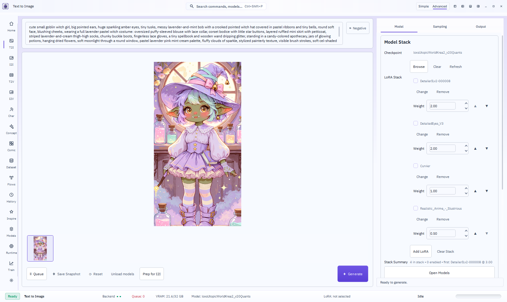
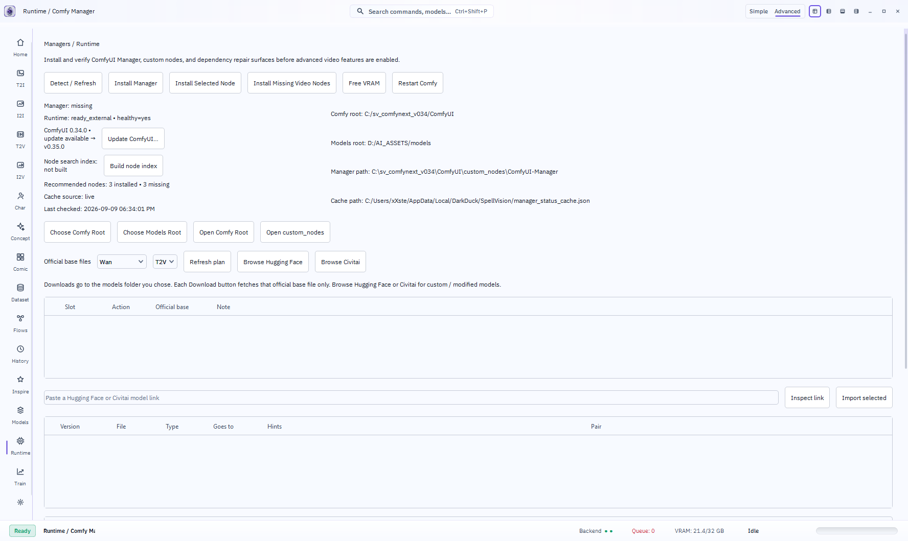

Pictured 1.0 walkthrough. Gates still open.
Doc 54 required T1–T6 green and grade S before this document. They are not. This is the peer-review record of what the live cockpit actually does, with pictures from this machine, and an honest list of what still blocks ship.
Verdict
Live T2I works. Overlay Generating… was proven. Sage is on the live Comfy argv and produced a dest still. T2 has a Download dialog. That is not S, and T1 / T3 / T6 are not product-complete.
| Gate | State | Evidence |
|---|---|---|
| Grade S | OPEN | Cockpit generates. Dest unlink not live-proven. Criterion 3 unmeasured. BitLocker leftover path. fluxmania still fail-closed. |
| T1 Train | NOT GREEN | Rail is still a Sohya launcher. No family recipes, no hardware-smart presets. |
| T2 Drop | PARTIAL | Dialog lists missing nodes + models; keys + create URLs; hf_token now forwarded (ed673a4). Not drop-proven live. |
| T3 Models | NOT GREEN | Stage-1 inventory. Teachers not productized. |
| T4 Opts | PARTIAL | krea2 T2I generate-proven on sage. Wan/LTX not. xformers absent. |
| T5 Defaults | PARTIAL | Family OP reapply + krea2 er_sde. Restore can still write last steps. Matrix not live-proven. |
| T6 Dual-PC | NOT GREEN | Research + SpellNode HTTP 200. No Distributed pack. Runtime does not list workers. CIFS host down. |
| T7 Walkthrough | THIS FILE | Pictures exist. Ship claim is forbidden until the rows above are green. |
Grade S — live cockpit
The product promise is intent in, stills out, without a node graph. The T2I cockpit does that on this PC.

- Overlay Generating… live-proven earlier (pid 2964). Footer + canvas rewrote.
- Unload models is on the action row (
4b88801). DynamicVRAM still fills the card — not a 0 GB promise. - Dest unlink is in tree (
ea67539). Last sage generate still left Comfyoutput/spellvision_render_job_7b1f406d05b0_00001_.pngbecause the live worker predated that commit. - Still open: BitLocker leftover checkpoint path; fluxmania in the wrong Comfy folder; 150 ms criterion unmeasured; MainWindow god-file not split.
T4 — optimizations, generate-proven
Sage was installed but not in argv on the adopted Comfy. Restarted with --use-sage-attention. krea2 T2I completed. Dest landed.
| Family × opt | Used / skipped / broke |
|---|---|
| krea2 T2I × sage | used — dest landed |
| krea2 T2I × comfy-aimdo 0.4.15 | installed; DynamicVRAM filled ~21 GB |
| Wan × sage | not generate-proven this wave |
| LTX × sage | not generate-proven this wave |
| xformers | absent in live Comfy venv |
T2 — workflow drop
Drop path no longer auto-submits. Missing node classes and missing models share one dialog. Nothing fetches until Download. Keys prompt only when the store is empty; create-key URLs are in the same dialog. Retry stamps civitai_api_key and hf_token. Worker now forwards hf_token (ed673a4).
Not drop-proven live this wave. Need a workflow JSON with a missing class or model, dropped onto the T2I rail, dialog photographed, Download clicked.
T5 — Simple = family OP
- Same-family checkpoint change reapplies the table (
380d8dd). - Hidden krea2 selector uses table sampler
er_sde(b9797e3). - Table krea2_image: 52 steps / CFG 3.5. Live Sampling tab showed 52 / 3.5.
- Open:
restoreSnapshotcan still write last-chose steps after OP apply. Full T2I/I2I/T2V/I2V × family matrix not live-proven.
T1 — Train
Not green. TrainPage launches external Sohya_kk. No per-family LoRA/checkpoint recipes. No VRAM/RAM/GPU-count presets. Dual-PC training params do not exist. Honest empty is not the product yet — it is just a launcher.
T3 — Models page
Not green. Stage-1 inventory + Inspect + bind/use + import-url. LoRA Manager / rgthree / SaveImageWithMetaData / Qwen LoRA loader were named as teachers. Behaviour not stolen into SpellVision. Do not vendor those UIs.
T6 — dual PC
NVPAIR is LLM-only. This LAN is 1× 5090 + remote 3090 Ti. 1.0 path is ComfyUI-Distributed (whole jobs), not VRAM pooling.

- SpellNode
GET http://192.168.1.127:8188/system_statswas 200, then Comfy stopped so PAIR keeps the 3090 Ti. - CIFS
//192.168.1.182/AI_ASSETS_modelshost-down. Cannot generate on the node until a share is mounted. - Distributed pack is not in Windows
custom_nodes. Runtime does not list workers. Fail-closed queue-to-node is not built.
1.0 nice-to-haves
Not blockers. Do not promote without another owner chat line.
- Target-res upscale tier; video upscale as a product control
- Taste pass on glass hover
- History page rename off
T2VHistoryPage - Cosmetic tail / animations
v1.1+
Parked. Do not start until 1.0 is green.
- Character B (mesh / garments / hair / beauty)
- Native 3D (TRELLIS.2)
- Comic page → crop → I2V → stitch
- Chain Studio unhide
- ComfyUI-Mesh, DisTorch, ParallelAnything, same-box CFG Split
- ControlNet / IP-Adapter as Simple intent